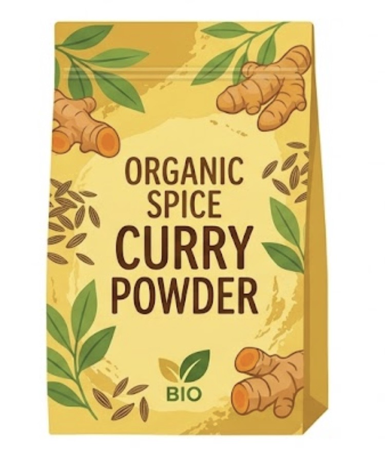
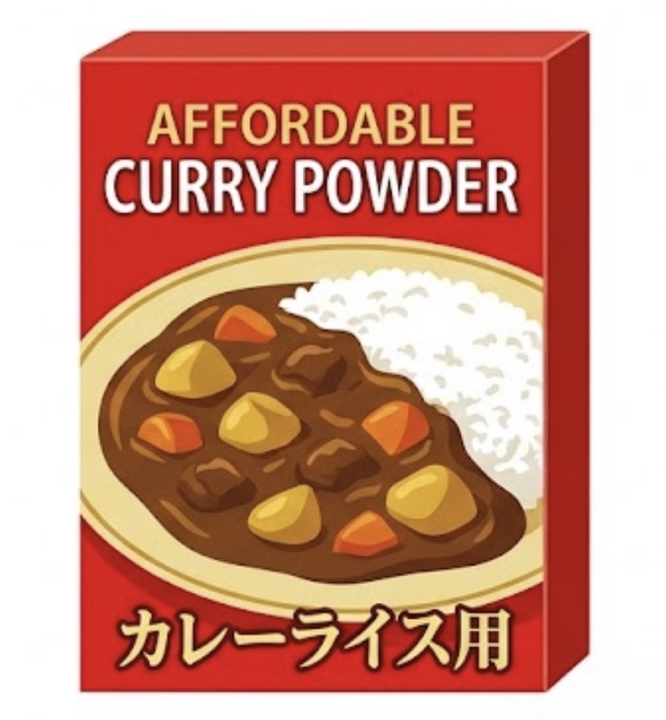
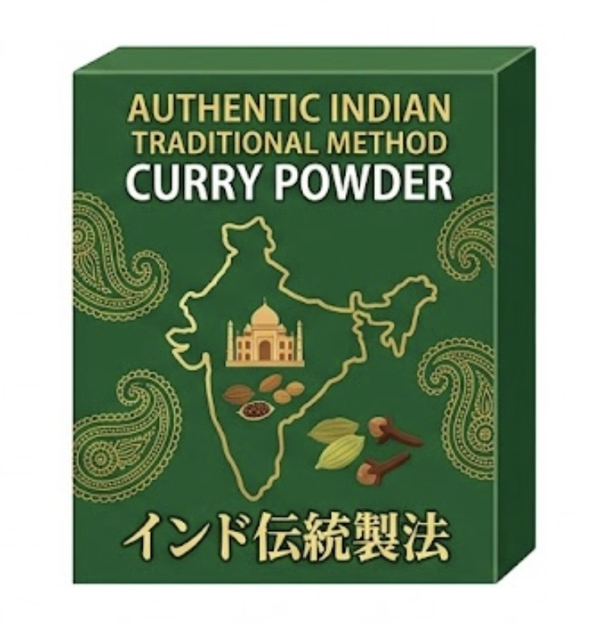

Ethical Market World

ここはエシカルマーケットワールド。
皆さんの消費傾向によって世界の在り方が決まる世界です。
参加した回で、EMWが最終的にエシカル度☆☆☆となれば、 1度でも参加した方は Orchidia Ethical Market Foresight Award を受賞することとなります。
ルール
高校生の皆さんに、同じ品目で製造過程や価格、デザインなどが 異なる商品の中で、どれを選択するか、投票してもらいます。
投票機会は1ヶ月に3回。 3ヶ月が1期間として、 1期間に全9回の投票があります。
早速、投票です！
今月①の品目は カレー粉。

A
Aの商品
オーガニックスパイスのカレー粉。 農薬や化学肥料の使用を抑えて栽培されたスパイスを使用。生産者とは長期契約を結んでいるが、取引価格は一般的な相場に沿っている。価格はやや高めだが、香りが豊か。HPで原材料の産地や栽培方法も確認できる。

B
Bの商品
お手頃カレー粉。 大量生産されたスパイスを使用し、輸送や製造の効率化によって価格を抑えている。生産者とは継続的に取引しているが、環境負荷を減らすための特別な取り組みは少ない。価格が安く、どこのスーパーでも手軽に購入でき、使いやすい。

C
Cの商品
本格派インド伝統製法のカレー粉。 インドの伝統的な製法で作られたスパイスを使用。生産者への支払い条件や栽培時の環境負荷については、十分な情報が公開されていない。価格は手頃で、風味はとても良い。
あなたならどれを選ぶ？
今月②の品目は 財布。

A
Aの商品
キャメル色の革財布。 牛革を使用し、耐久性を重視して作られている。製造工場の労働環境や、革の加工に使う薬品の管理については詳しい情報が公開されていない。価格は手頃で、丈夫で使いやすく、長期間使用できる。

B
Bの商品
コルク素材の財布。 木を伐採せずに樹皮を採取できるコルクを主な素材に使用。生産者とは継続的に取引し、製造工程で出る端材も再利用している。価格は平均よりやや高いが、軽くて手入れが簡単。素材の調達先や製造工程も確認できる。

C
Cの商品
白くてふわふわなお財布。 回収されたペットボトル由来の再生ポリエステルを使用。製造時の端材を減らす工夫をしており、素材の一部にリサイクル原料を使用している。価格は手頃で軽量だが、耐久性は一般的な財布と同程度で、ファスナーの修理には対応していない。
あなたならどれを選ぶ？
今月③の品目は オレンジジュース。

A
Aの商品
とくとくパックオレンジジュース 海外の大規模農園で栽培されたオレンジを使用。生産者とは継続的に取引しているが、栽培時の農薬や水の使用量を減らす取り組みは限定的。大容量で価格が安く、果汁の割合や原材料が明記されているため、毎日の飲み物として購入しやすい。

B
Bの商品
有機オレンジジュース。 有機JAS認証を取得したオレンジを使用。生産者と公正な条件で取引し、栽培時の環境負荷を抑える工夫をしている。価格はやや高めだが、原材料や認証情報を確認でき、果汁本来の味わいを楽しめる。容器にはリサイクル可能なガラス瓶を採用している。

C
Cの商品
産地直送オレンジジュース。 地元の農園で収穫されたオレンジを使用し、規格外の果実もジュースに加工している。輸送距離が短く、食品ロスの削減にもつながる。一方、小規模生産のため生産者への支払い条件は明確でない。価格はやや高めだが、地域の果実を味わえる。
あなたならどれを選ぶ？